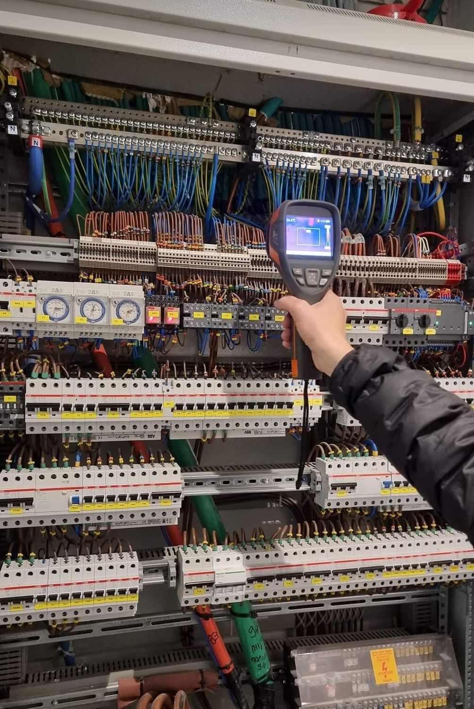
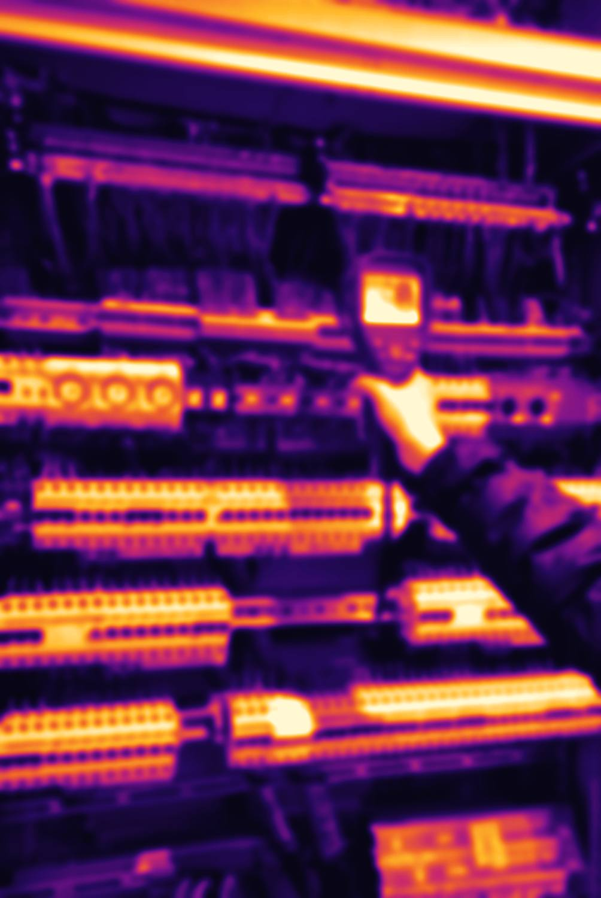

סריקה תרמוגרפיתThermographic scan
צילום תרמי של לוחות החשמל.Thermal imaging of electrical panels.
קונספט לדוגמה שנבנה עבור מהנדס ובודק חשמל אסף דטינקה כהן · זה אינו האתר הרשמי של העסקA sample concept built for electrical engineer & inspector Assaf Datinka Cohen · This is not the business’s official website


מהנדס ובודק חשמל – עורך מבדק מוס״ח: בדיקות למתקנים, לעסקים ולבתים, עם צילום תרמי של הלוח. אלכסנדר זייד 81, חיפה.Electrical engineer and inspector, also running Mosach inspections: tests for installations, businesses and homes, with thermal imaging of the panel. 81 Alexander Zaid St, Haifa.
הבדיקות שאסף עורך, לפי תקנות החשמל.The tests Assaf carries out, under the electricity regulations.
צילום תרמי של לוחות החשמל.Thermal imaging of electrical panels.
מצב המוליכים, גם אלה שבתוך הקיר.The state of the conductors, including those inside the wall.
ערך הלולאה, כדי שההגנה בלוח תפעל.The loop value, so the panel’s protection can act.
חיבור האביזרים להארקה של המבנה.How the fittings connect to the building’s earthing.
בדיקת תקינות המפסק.Checking the RCD works.
בדיקה והיתר להמשך שימוש.Testing and approval for continued use.
לפי הנחיית מנהל החשמל.As the Electricity Authority directs.
התאמת לוחות לדרישות הכבאות.Panels matched to fire-service requirements.
הבדיקה מסתכמת בדוח מסודר.The inspection ends in a clear report.
דוח בדיקת מתקן חשמלElectrical installation test reportדוגמה להמחשה בלבדAn illustrative sample only
נבדקTested
אסף בודק מתקנים, וגם מלמד חשמלאים.Assaf tests installations, and also teaches electricians.
חשמלאי־מהנדס · חשמלאי־בודקLicensed electrician-engineer · electrician-inspector
דירוג 5.0 מתוך 60 ביקורות בגוגל.Rated 5.0 from 60 Google reviews.
…אסף הוא חשמלאי בודק סוג 3 ברמות הגבוהות שעוד לא ראיתי. דיוק, מקצועיות וירידה לפרטים ברמה הגבוהה ביותר… הוא יודע להסביר כל סעיף בבדיקה, בגובה העיניים ובאופן ענייני.
…Assaf is a grade-3 inspecting electrician at the highest level I’ve seen yet. Precision, professionalism and attention to detail at the very highest level… He knows how to explain every item in the inspection, plainly and to the point.
פניתי לאסף בנושא היתר חשמל למתקן, שמחתי לראות אדם שירותי, אמין ובעיקר והכי חשוב מקצועי שלא מתפשר על הפרטים הקטנים.
I contacted Assaf about an electrical permit for an installation, and was glad to find someone service-minded, reliable and above all professional, who doesn’t compromise on the small details.
העבודה מול אסף הייתה מצוינת. הוא ענייני, מקצועי ומספק מענה מהיר ויעיל לכל פנייה ושאלה. אסף ביצע בדיקה יסודית ומעמיקה…
Working with Assaf was excellent. He is to the point, professional, and answers every request and question quickly and efficiently. Assaf carried out a thorough, in-depth inspection…
כהנדסאי חשמל, ובודק2, באתי פסימי לשיעור הראשון… כעת רוצה להודות לך על הרצון ללמד, ולהנגיש את חומר הלימוד.
As an electrical technician and grade-2 inspector, I came to the first lesson pessimistic… Now I want to thank you for your will to teach and to make the material accessible.
…מאוד אדיב, מקצועי, סובלני ואדם נפלא. שירות הכי טוב שיכולתי לקבל. ממליץ בחום!
…Very courteous, professional, patient and a wonderful person. The best service I could have had. Highly recommended!
לפני ההפעלה הראשונה של מתקן חשמל, כתנאי להפעלתו. לעסק – לחידוש ביטוח, לרישוי עסקים ולנציבות כבאות. וגם לפני קניית דירה יד שנייה.Before an installation is switched on for the first time, as a condition for running it. For a business: to renew insurance, for a business licence and for the fire authority. And before buying a second-hand flat.
התנגדות בידוד, ערך לולאת התקלה, רציפות הארקה, תקינות מפסק המגן, סריקה תרמוגרפית ובדיקה ויזואלית של הלוח ואביזריו לפי חוק החשמל.Insulation resistance, the fault-loop value, earth continuity, the RCD, a thermographic scan and a visual check of the panel and its fittings against the electricity law.
כן. בדיקת עמדות טעינה פרטיות, כנדרש לפי הנחיית מנהל החשמל.Yes. Private charging points are tested as the Electricity Authority directs.
ההודעה לאסף נכתבת על המסך. שליחה בוואטסאפ.Your message to Assaf writes itself on the screen. Sent by WhatsApp.